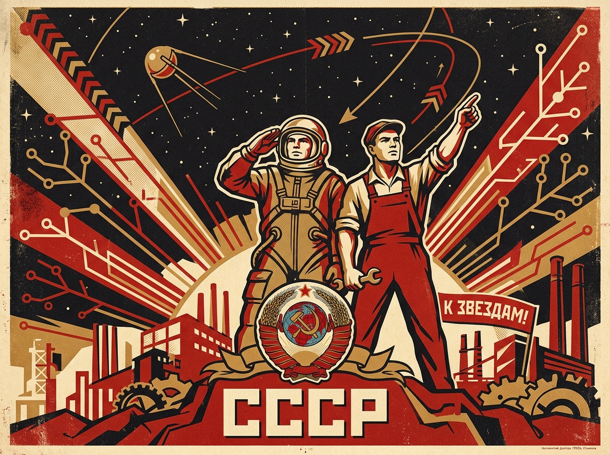
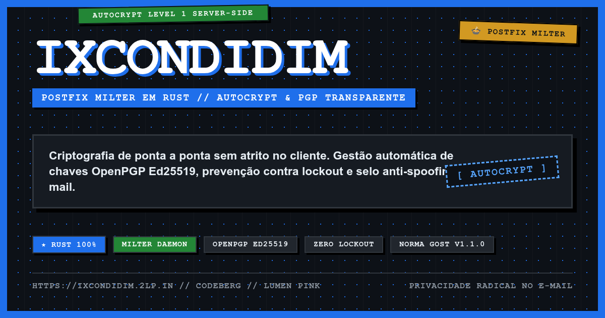
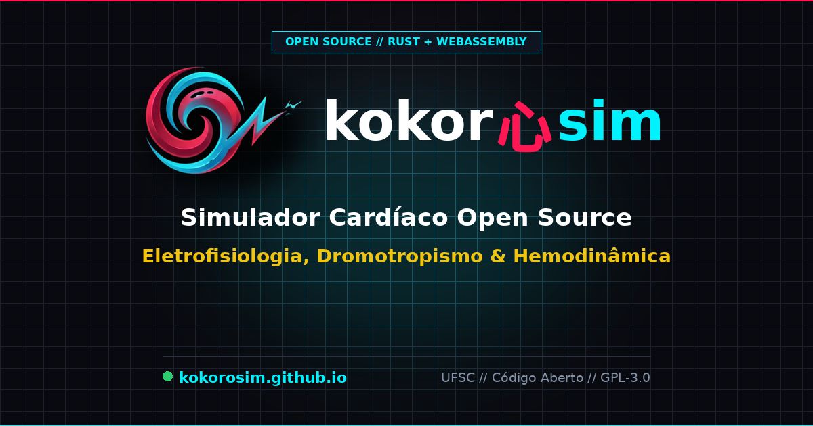
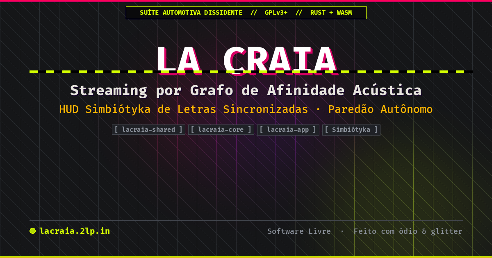
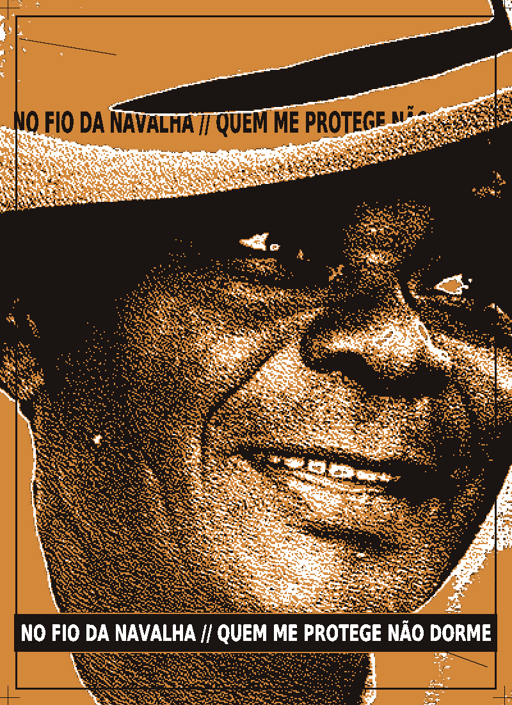
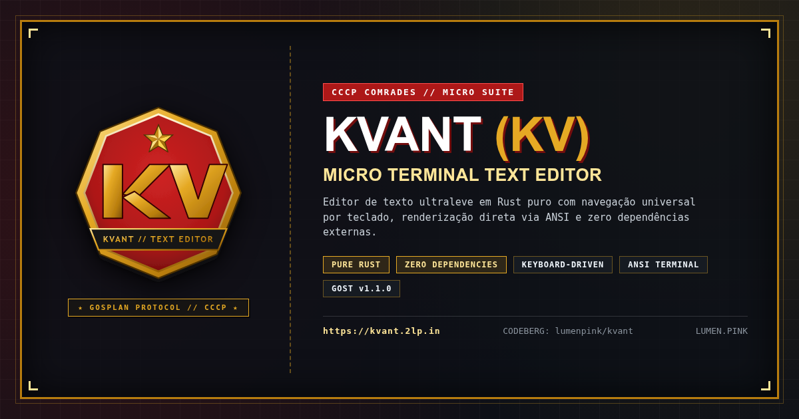
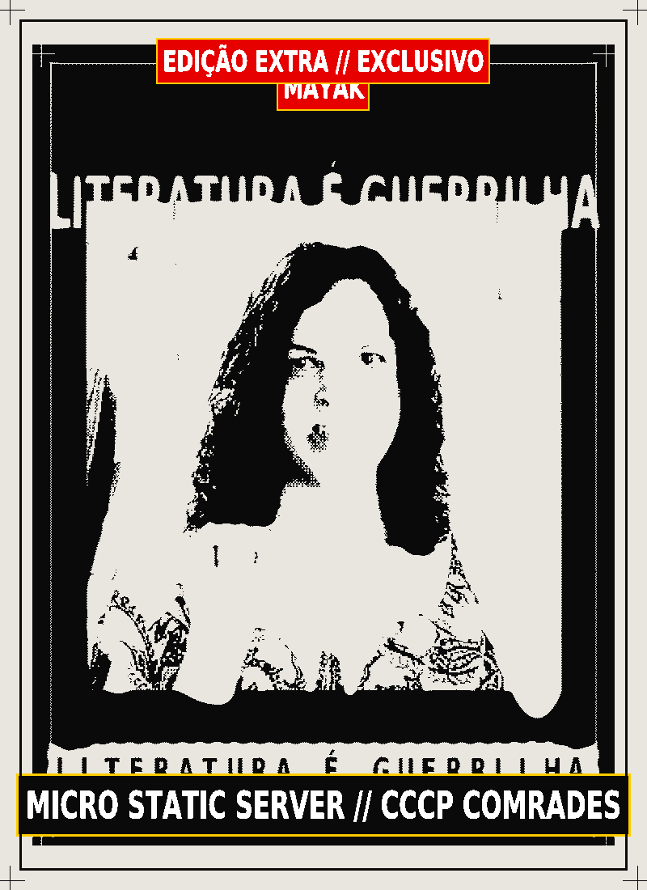
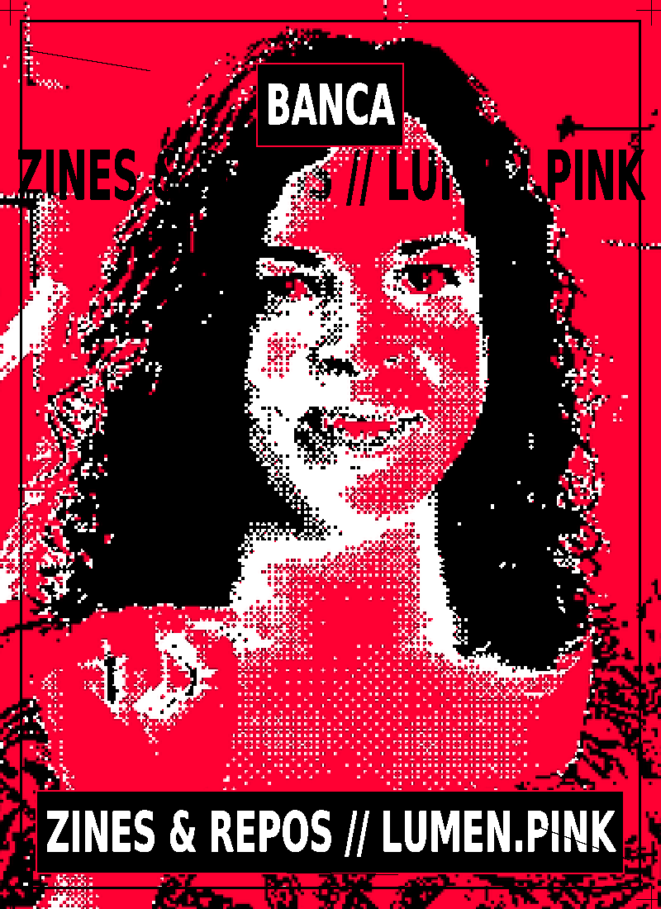
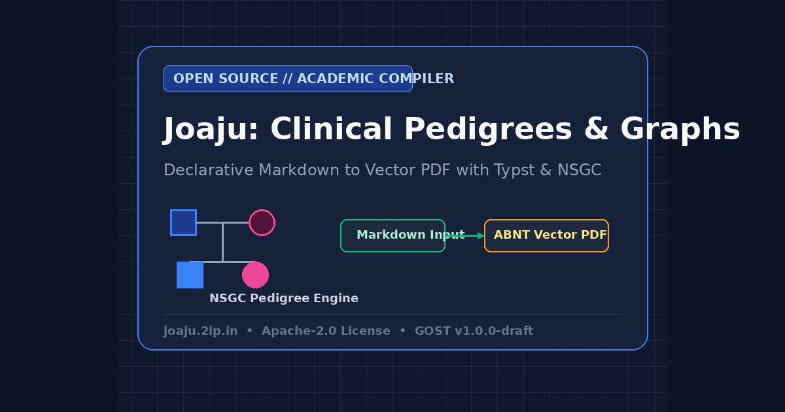

codeberg MIT
[ STANDBY ]
AGUARDANDO PÔSTER NAVALHA
ListaDeFármacos
Parser e estruturador de formas farmacêuticas e apresentações de medicamentos
Vitrine de código aberto, ferramentas de terminal, utilitários de fricção, publicações e experimentações criadas e mantidas por Lumen Pink. Arquitetura soberana, anti-design e autonomia técnica na borda.
Parser e estruturador de formas farmacêuticas e apresentações de medicamentos
Ecossistema médico e prontuário com receitas digitais criptografadas em ledger
Infraestrutura conteinerizada de homelab com SSO (Authelia), DNS local e dashboard
Scripts automatizados de instalação e bootstrapping da arquitetura Baquara Homelab

Utilitários e automações de shell para padronização e deploy contínuo em servidores Unix
Compartilhamento de arquivos na borda e encurtador de URLs compatível com 0x0 e rustypaste
Infraestrutura de serviços independentes do jardim digital lumen.pink (Caddy, Gemini, Gopher)
Social personal website swiss knife: static site generator modular em PHP para a IndieWeb
Setup automatizado e resiliente para i3wm, terminal st e ecossistema de produtividade

Filtro Milter Postfix em Rust para Autocrypt L1 server-side com gestão automática OpenPGP

Simulador cardíaco open source de eletrofisiologia, dromotropismo e hemodinâmica com Rust e Wasm


> **Motor gráfico e ambiente de composição visual anti-design, fanzine punk e estética de alta fricção.**
Filtro Milter Postfix em Rust para envelopar e-mails em papel de carta responsivo MJML
Sistema web e motor de regras para RPG de mesa (Ordem Paranormal / HackRom)
Structured, data-driven format for syndicating personal typographic and cosmetic styles (V1)
WordPress plugin adding native support for the Whostyles V1 (Hash Protocol) specification
Extrator e sincronizador automatizado de notas e referências bibliográficas do Zotero

Especificação padrão para arquitetura de repositórios, ciclo DD-TDD e documentação pública
Micro HTTP/HTTPS client in pure Rust (Gosplan Ministry of Communications)

Micro static HTTP server in pure Rust (Gosplan Radio & Static Broadcasting)

A Banca de Zines e Projetos: vitrine estática e anti-design do ecossistema Lumen

Orquestrador declarativo local e compilador acadêmico com suporte a grafos, diagramas e heredogramas clínicos (NSGC / ABNT / Vancouver)